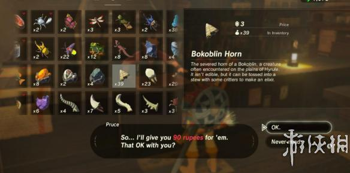
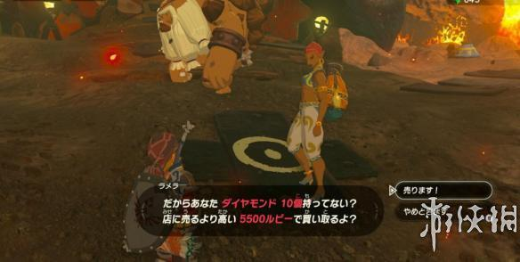

在塞尔达传说荒野之息中有许多的赚钱方法，今天小编就为大家带来塞尔达传说荒野之息赚钱方法图文汇总，希望可以帮助广大玩家早日脱贫，走向人生巅峰。
赚钱方法图文汇总
卖素材、卖矿石、卖料理
卖素材、卖矿石、卖料理，这是最基本的思路。毕竟素材、矿石都可以反复刷、料理可以反复做。

关于卖矿石
在火山地区(世界的东北部)，哥隆的聚落(ゴロンシティ、Goron City)，在完成这里的主线任务后，你会遇到一个 Gerudo(ゲルド)族的女性 ラメラ，她会高价收购矿石。
ラメラ 一次性收购10个矿石，每次收购的矿石种类不同。
